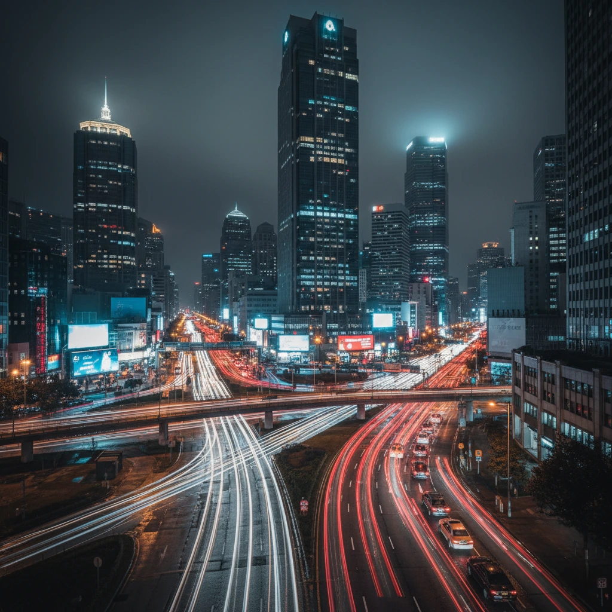
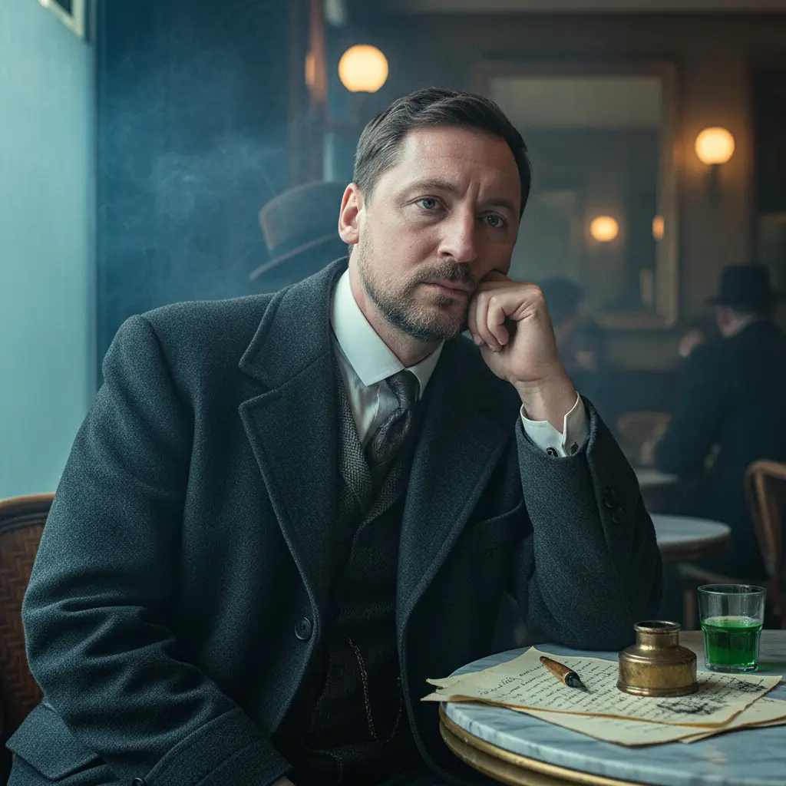
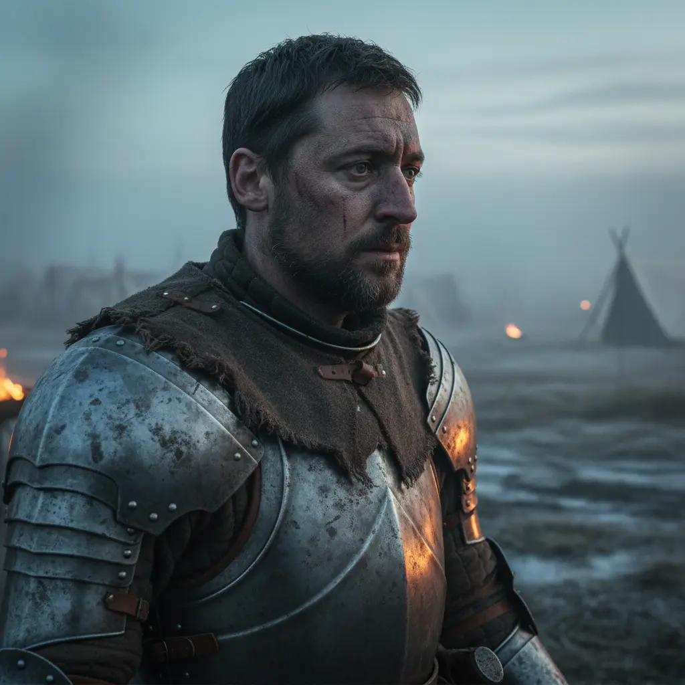
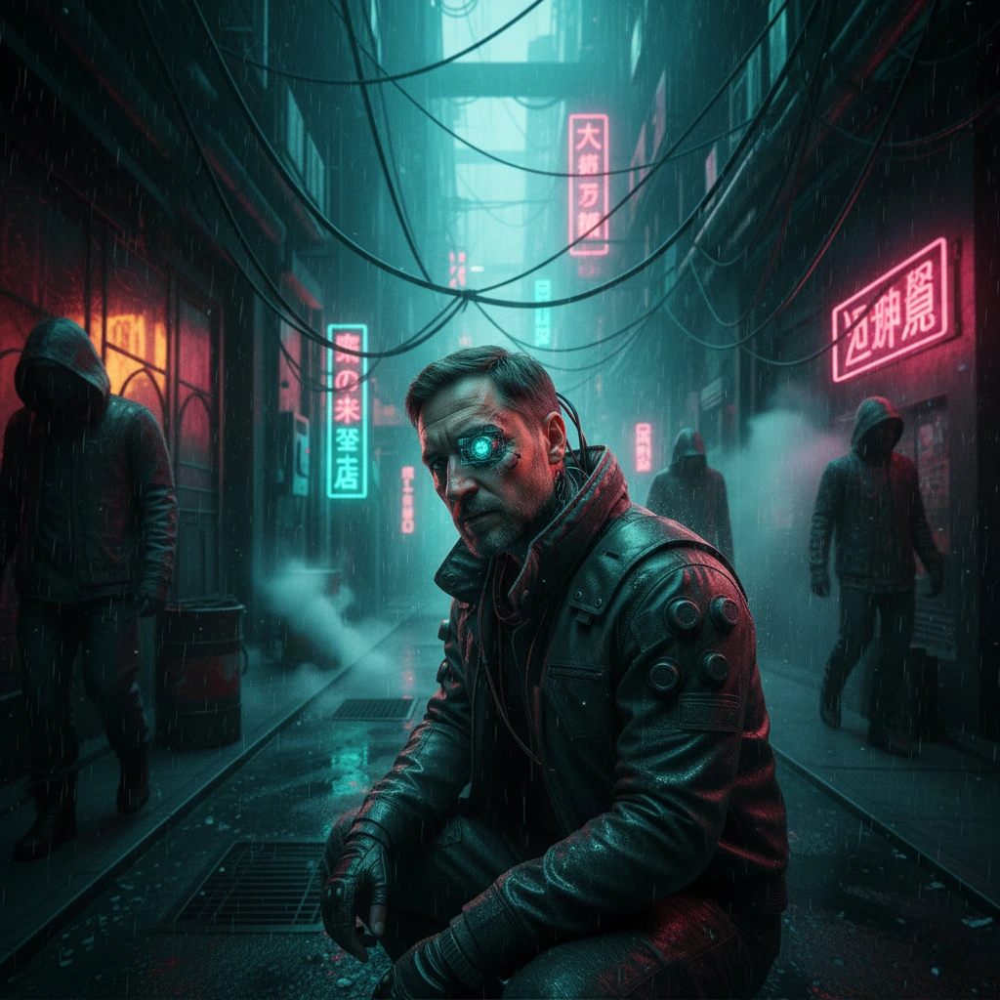
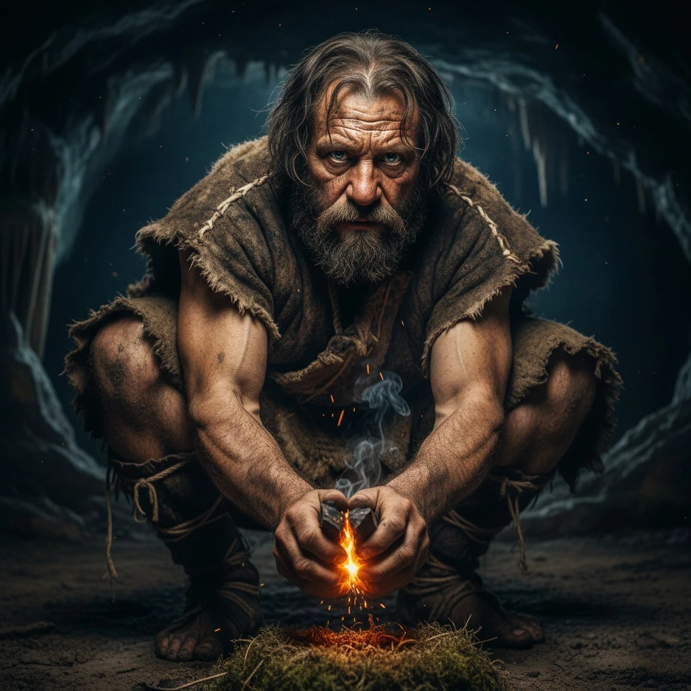
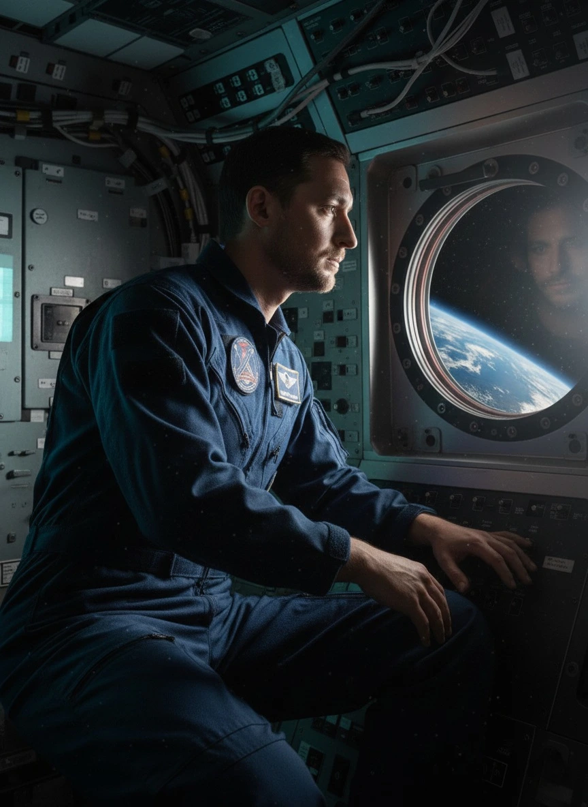
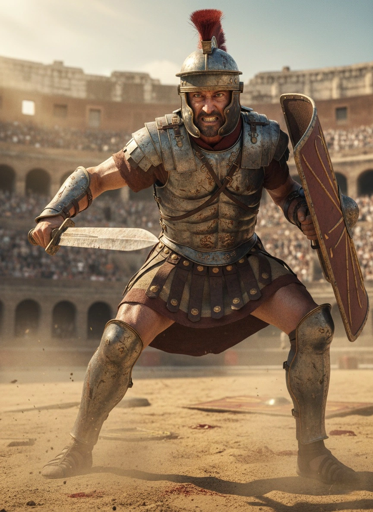

STATIC_GEN 1.0

L'Illusion du Flux
L'image montre un océan photoréaliste. En activant la vidéo, vous voyez les vagues bouger.
ATTENTION : Cette vidéo n'a pas été filmée. Elle a été prédite mathématiquement.
ATTENTION : Cette vidéo n'a pas été filmée. Elle a été prédite mathématiquement.
IMAGE IAVIDEO IA
STATIC_GEN 1.0
Deepfake Émotionnel
La vidéo montre des clignements d'œils et des micro-expressions. Cela semble valider l'existence de cette personne.
RÉALITÉ : Ces mouvements sont des hallucinations statistiques.
RÉALITÉ : Ces mouvements sont des hallucinations statistiques.
IMAGE IAVIDEO IA
STATIC_GEN 1.0

Faux Événement
Une ville la nuit. La vidéo montre le trafic, preuve classique utilisée pour les fake news.
VERDICT : Regardez les erreurs logiques de l'IA. Elle rêve le mouvement sans le comprendre.
VERDICT : Regardez les erreurs logiques de l'IA. Elle rêve le mouvement sans le comprendre.
IMAGE IAVIDEO IA
GALERIE DES RÉALITÉS GÉNÉRATIVES
STATIC

Paris, 1920
Un écrivain perdu dans ses pensées au Café de Flore.
IMGVID
STATIC
Mars, 2084
Première colonie. L'air est respirable mais poussiéreux.
IMGVID
STATIC

Royaume du Nord, 1450
Chevalier errant avant la bataille des Trois Rois.
IMGVID
STATIC
Vol Insulaire
Simulation de vent et physique des tissus au-dessus de l'océan.
IMGVID
STATIC

Neo-Tokyo, 2073
Cyber-augmenté, naviguant dans les bas-fonds numériques.
IMGVID
STATIC
Impact Cinétique
Analyse de la tension musculaire et de la physique de l'impact.
IMGVID
STATIC

L'Aube du Feu
Reconstitution d'un geste ancestral. Observez la physique des étincelles.
IMGVID
STATIC

Orbite Basse
Micro-gravité et gestion des reflets complexes sur le verre.
IMGVID
STATIC

Fureur de l'Arène
Simulation d'émotion intense et tension musculaire extrême.
IMGVID